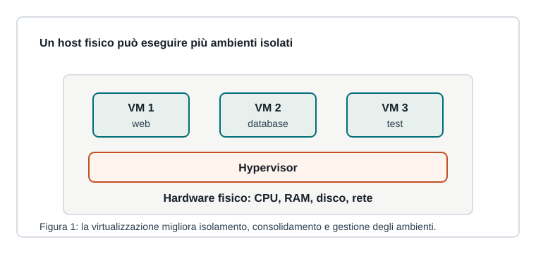

Capitoletto 4.3
Virtualizzazione
La virtualizzazione permette di eseguire più ambienti isolati sulla stessa macchina fisica, migliorando prove, gestione e uso delle risorse.

Macchine virtuali
Una macchina virtuale simula un computer completo: ha CPU virtuale, RAM, disco, scheda di rete e sistema operativo. È utile per testare server, creare laboratori e isolare ambienti.
L'hypervisor può essere installato direttamente sull'hardware o sopra un sistema operativo esistente.
Vantaggi e limiti
| Vantaggio | Significato |
|---|---|
| Isolamento | un problema in una VM non deve bloccare le altre |
| Consolidamento | più server logici su meno hardware fisico |
| Snapshot | ritorno rapido a uno stato precedente |
| Portabilità | spostamento più semplice degli ambienti |
I limiti riguardano prestazioni, consumo di risorse, licenze e complessità di gestione.
Container
I container isolano applicazioni e dipendenze condividendo il kernel del sistema host. Sono più leggeri delle VM, ma non sostituiscono sempre una macchina virtuale completa.
Una VM virtualizza un intero sistema operativo; un container impacchetta un'applicazione con ciò che le serve per funzionare.
Uso in laboratorio
In ambito didattico la virtualizzazione permette di provare server DNS, DHCP, web, firewall e sistemi Linux senza modificare i computer reali. Snapshot e reti virtuali rendono gli esperimenti reversibili.
Ripasso
A cosa serve uno snapshot?
A salvare lo stato di una VM per poter tornare indietro rapidamente dopo prove o errori.
Perché i container sono più leggeri delle VM?
Perché condividono il kernel dell'host e non avviano un sistema operativo completo separato.